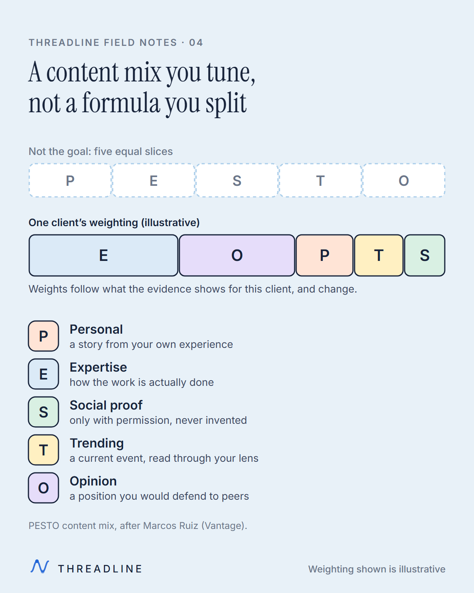
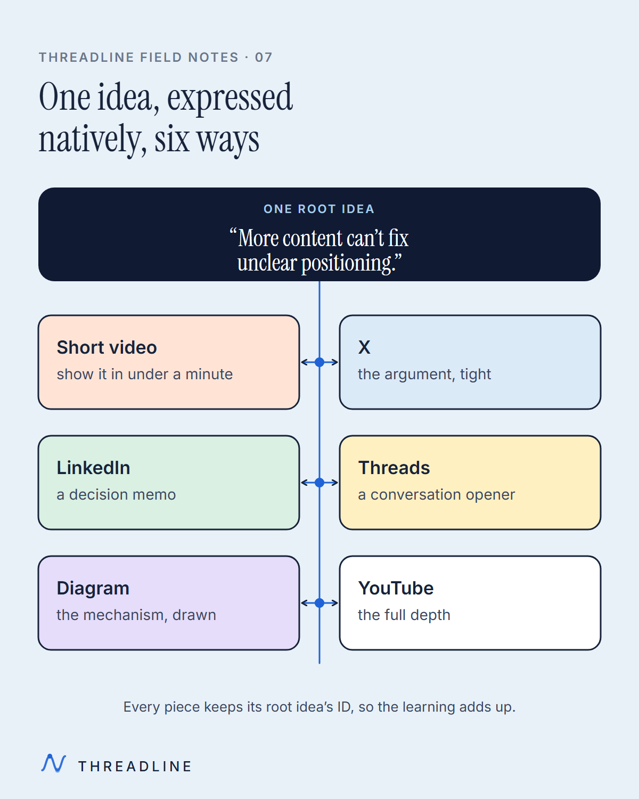

01-expertise-to-qualified-demand-journey
01-expertise-to-qualified-demand-journey 02-diagnosis-improvement-loop
02-diagnosis-improvement-loop 03-human-ai-draft-human-review
03-human-ai-draft-human-review
04-pesto-content-mix 05-content-plus-outbound-system
05-content-plus-outbound-system 06-views-attention-qualified-demand
06-views-attention-qualified-demand
07-one-idea-native-formats![Flow across the top: heard on a call, logged, becomes a piece, seen before the next call. A table of illustrative examples follows. 'We tried content. It got likes, not clients.' is logged as proof and becomes 'Why views mislead, and what to read instead'. 'AI content all sounds the same.' is logged as AI and becomes 'How a human check keeps your voice yours'. 'I don't have time for this.' is logged as time and becomes 'What you actually do: talk, record, approve, sell'. 'Can't we just post more?' is logged as alternatives and becomes 'Why more volume can amplify the wrong thing'.](export/08-sales-objections-to-content-1200.png) 08-sales-objections-to-content
08-sales-objections-to-content 09-what-implementation-establishes
09-what-implementation-establishes 10-four-week-review-cycle
10-four-week-review-cycle